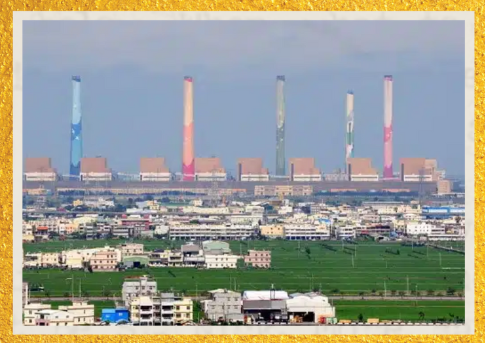

Usina Termelétrica de Taichung
Maior Usina a Carvão do Mundo
Localizada em Taichung, Taiwan, esta usina iniciou suas operações em 1991 e se tornou a maior termelétrica a carvão em capacidade instalada do mundo, com 5.500 MW. É composta por dez unidades a carvão que abastecem grande parte do consumo elétrico de Taiwan. Apesar de sua importância econômica, a usina destaca-se também como uma das principais fontes de emissão de gases de efeito estufa, simbolizando os desafios globais da dependência de combustíveis fósseis para geração de energia.